from scipy.stats import andersonTraining Collaborative Filtering Models on MovieLens 100k with Different y_range Values
machine learning
fastai
python
In this notebook I explore the question—how does the
y_range parameter affect model performance and prediction distributions? I use the MovieLens 100k subset as the dataset.
Background
In Chapter 8 of the fastai text we train a collaborative filtering model that predicts movie ratings for users (who have not watched those movies yet). It’s one way of asking the question: would this user like this movie given their interests and the movie’s characteristics? The users’ “interests” and the movies’ “characteristics” are the latent factors that we train. The ratings (predictions) are the dot product between the user and movie latent factors. This dot product passes through the sigmoid_range function which squeezes the input values into output values within a given range. In the textbook, the range we use is 0 to 5.5. We use 5.5 because the sigmoid function never reaches 1 so 5 * sigmoid would never reach 5 (the maximum movie rating). Overshooting by 0.5 solves this issue. 5.5 times sigmoid will be able to reach an output of 5 comfortably.
In this blog post I’ll explore the question: how does model performance vary as y_range varies?
Here is a summary of my results of different statistics (rows) for different y_range values (columns) for the validation set (20k samples):
| Statistic | None | (0, 5.5) | (0.5, 5.5) | (0.75, 5.25) | (1,5) | (-2,8) |
|---|---|---|---|---|---|---|
| Median Prediction | 3.49 | 3.53 | 3.54 | 3.54 | 3.53 | 3.55 |
| Mean Prediction | 3.43 | 3.48 | 3.5 | 3.5 | 3.49 | 3.51 |
| Kurtosis | 0.78 | -0.06 | -0.1 | -0.11 | -0.14 | 0.12 |
| Skew | -0.59 | -0.39 | -0.34 | -0.36 | -0.38 | -0.32 |
| Anderson-Darling | 71.7 | 42.4 | 33.4 | 37 | 42 | 21.8 |
| % preds outside 1-5 | 0.93% | 0.23% | 0.21% | 0.07% | 0.00% | 1.19% |
And for the training set (80k samples):
| Statistic | None | (0, 5.5) | (0.5, 5.5) | (0.75, 5.25) | (1,5) | (-2,8) |
|---|---|---|---|---|---|---|
| Median Prediction | 3.50 | 3.60 | 3.60 | 3.60 | 3.59 | 3.63 |
| Mean Prediction | 3.44 | 3.49 | 3.50 | 3.50 | 3.50 | 3.52 |
| Kurtosis | 0.42 | 0.15 | 0.003 | 0.003 | -0.06 | 0.2 |
| Skew | -0.49 | -0.61 | -0.53 | -0.56 | -0.56 | -0.5 |
| Anderson-Darling | 228.9 | 490.4 | 388.1 | 444.8 | 467.6 | 350.4 |
| % preds outside 1-5 | 0.68% | 0.31% | 0.23% | 0.05% | 0.00% | 1.85% |
Training without y_range
I think it makes sense to first explore the loss and output distribution when I don’t set y_range when training a collaborative filtering model on the 100k subset of MovieLens. I’ll reuse the code from the text to prepare the data and DataLoaders and use a weight decay of 0.1:
from fastai.collab import *
from fastai.tabular.all import *
path = untar_data(URLs.ML_100k)
ratings = pd.read_csv(path/'u.data', delimiter='\t', header=None, names=['user', 'movie', 'rating', 'timestamp'])
movies = pd.read_csv(path/'u.item', delimiter='|', encoding='latin-1', usecols=(0,1), names=('movie', 'title'), header=None)
ratings = ratings.merge(movies)
ratings.head()
100.15% [4931584/4924029 00:00<00:00]
| user | movie | rating | timestamp | title | |
|---|---|---|---|---|---|
| 0 | 196 | 242 | 3 | 881250949 | Kolya (1996) |
| 1 | 63 | 242 | 3 | 875747190 | Kolya (1996) |
| 2 | 226 | 242 | 5 | 883888671 | Kolya (1996) |
| 3 | 154 | 242 | 3 | 879138235 | Kolya (1996) |
| 4 | 306 | 242 | 5 | 876503793 | Kolya (1996) |
dls = CollabDataLoaders.from_df(ratings, item_name='title', bs=64)
dls.show_batch()| user | title | rating | |
|---|---|---|---|
| 0 | 815 | Groundhog Day (1993) | 4 |
| 1 | 357 | Phantom, The (1996) | 3 |
| 2 | 246 | Blown Away (1994) | 3 |
| 3 | 311 | Casablanca (1942) | 4 |
| 4 | 457 | Immortal Beloved (1994) | 4 |
| 5 | 241 | Titanic (1997) | 4 |
| 6 | 525 | Independence Day (ID4) (1996) | 4 |
| 7 | 394 | Cape Fear (1991) | 4 |
| 8 | 109 | Dante's Peak (1997) | 3 |
| 9 | 334 | Wolf (1994) | 2 |
learn = collab_learner(dls, n_factors=50, y_range=None)
learn.fit_one_cycle(5, 5e-3, wd=0.1)| epoch | train_loss | valid_loss | time |
|---|---|---|---|
| 0 | 1.257861 | 1.301678 | 00:13 |
| 1 | 1.071218 | 1.113060 | 00:12 |
| 2 | 0.989054 | 1.017373 | 00:11 |
| 3 | 0.856945 | 0.928325 | 00:12 |
| 4 | 0.848923 | 0.905493 | 00:12 |
I want to see the distribution of predictions for the training and validation set and understand how they vary. I’ll create a helper function for that.
def plot_preds(preds, title):
preds = pd.Series(preds)
preds.hist();
plt.title(f'{title} preds distribution')
print('median:', preds.median())
print('mean:', preds.mean())
print('kurtosis: ', preds.kurtosis())
print('skew: ', preds.skew())
result = anderson(preds, dist='norm')
print(f'Statistic: {result.statistic}')
print(f'Critical values: {result.critical_values}')
print(f'Significance levels: {result.significance_level}')
cond = (preds < 1) | (preds > 5)
print(f'% of preds outside of 1-5 range: {100*cond.sum()/cond.count():.2f}%')preds, targ = learn.get_preds(dl=dls.valid)# check loss---should be close to 0.905493
MSELossFlat()(preds, targ)TensorBase(0.9055)plot_preds(learn.get_preds(dl=dls.valid)[0], 'valid')median: 3.4890234
mean: 3.4260304
kurtosis: 0.7783028
skew: -0.58709365
Statistic: 71.65442338831053
Critical values: [0.576 0.656 0.787 0.918 1.092]
Significance levels: [15. 10. 5. 2.5 1. ]
% of preds outside of 1-5 range: 0.93%
The validation set predictions are slightly skewed left with a median rating of about 3.5. Based on the Anderson-Darling statistic (which is significantly larger than the most stringent critical value of 1.092), these 20k samples don’t come from a normal distribution. Less than 1% of the values fall outside of the expected rating range of 1 to 5.
plot_preds(learn.get_preds(dl=dls.train)[0], 'train')median: 3.4968839
mean: 3.435657
kurtosis: 0.41849822
skew: -0.49159753
Statistic: 228.91494857503858
Critical values: [0.576 0.656 0.787 0.918 1.092]
Significance levels: [15. 10. 5. 2.5 1. ]
% of preds outside of 1-5 range: 0.68%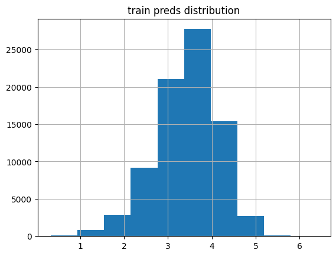
The training set predictions are similarly distributed, with a slightly larger peak resulting in a slightly larger median rating, still around 3.5.
In general there are more values outside of the realistic range (1 to 5) of ratings in the validation predictions than the training predicitons. Although, the model is doing pretty well at predicting values within the desired range with less than 1% falling outside this range.
Training with y_range=(0, 5.5)
learn2 = collab_learner(dls, n_factors=50, y_range=(0, 5.5))
learn2.fit_one_cycle(5, 5e-3, wd=0.1)| epoch | train_loss | valid_loss | time |
|---|---|---|---|
| 0 | 0.882406 | 0.942118 | 00:13 |
| 1 | 0.650510 | 0.887792 | 00:12 |
| 2 | 0.542655 | 0.862130 | 00:12 |
| 3 | 0.440741 | 0.848899 | 00:12 |
| 4 | 0.442999 | 0.842771 | 00:12 |
Using a y_range of 0 to 5.5 resulted in a ~7% lower loss.
plot_preds(learn2.get_preds(dl=dls.valid)[0], 'valid')median: 3.5321503
mean: 3.4844122
kurtosis: -0.055667587
skew: -0.3875332
Statistic: 42.351315721156425
Critical values: [0.576 0.656 0.787 0.918 1.092]
Significance levels: [15. 10. 5. 2.5 1. ]
% of preds outside of 1-5 range: 0.23%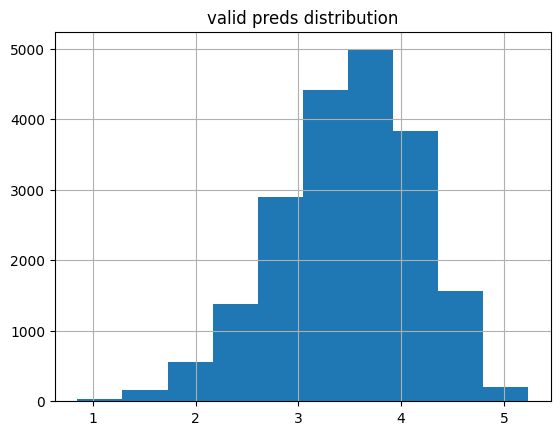
This distribution is still not normal but has half the Anderson-Darling statistic as when y_range was None. The kurtosis is closer to 0 as well. The key point is that only about 1/4th of the values as before are outside of the 1-5 rating range.
plot_preds(learn2.get_preds(dl=dls.train)[0], 'train')median: 3.5977917
mean: 3.4933543
kurtosis: 0.14653848
skew: -0.6128638
Statistic: 490.3643317096139
Critical values: [0.576 0.656 0.787 0.918 1.092]
Significance levels: [15. 10. 5. 2.5 1. ]
% of preds outside of 1-5 range: 0.31%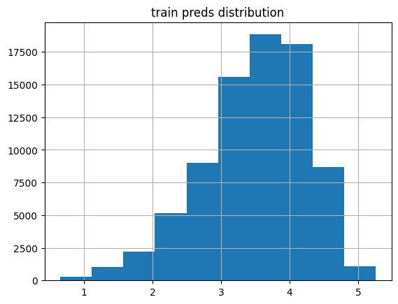
The training predictions are more skewed than the validation predictions.
Training with y_range=(0.5, 5.5)
ratings['rating'].min(), ratings['rating'].max()(1, 5)I can’t find it anymore, but there was a fastai forums post where someone was questioning why the lower range in y_range wasn’t 0.5 (0.5 less than the minimum rating of 1 matching the upper range 5.5 is 0.5 more than the maximum rating of 5). I’ll see if training with y_range=(0.5, 5.5) improves the loss or changes the distribution of predictions.
learn3 = collab_learner(dls, n_factors=50, y_range=(0.5, 5.5))
learn3.fit_one_cycle(5, 5e-3, wd=0.1)| epoch | train_loss | valid_loss | time |
|---|---|---|---|
| 0 | 0.841459 | 0.931699 | 00:14 |
| 1 | 0.652540 | 0.878996 | 00:12 |
| 2 | 0.530454 | 0.865976 | 00:12 |
| 3 | 0.448474 | 0.856127 | 00:13 |
| 4 | 0.423248 | 0.852660 | 00:12 |
That actually worsened the loss, increasing it by about 1%. I’ll look at the training and validation prediction distributions:
plot_preds(learn3.get_preds(dl=dls.valid)[0], 'valid')median: 3.5413134
mean: 3.5004866
kurtosis: -0.102446005
skew: -0.3400191
Statistic: 33.359148298073706
Critical values: [0.576 0.656 0.787 0.918 1.092]
Significance levels: [15. 10. 5. 2.5 1. ]
% of preds outside of 1-5 range: 0.21%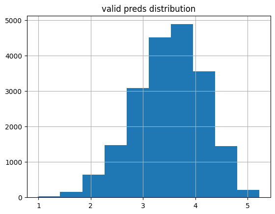
The median and mean ratings are a bit higher and about the same amount of ratings are outside the acceptable range. The distribution is similarly not normal but has the lowest Anderson-Darling statistic so far.
plot_preds(learn3.get_preds(dl=dls.train)[0], 'train')median: 3.6018043
mean: 3.5078757
kurtosis: 0.0025408994
skew: -0.5326863
Statistic: 388.08379248825077
Critical values: [0.576 0.656 0.787 0.918 1.092]
Significance levels: [15. 10. 5. 2.5 1. ]
% of preds outside of 1-5 range: 0.23%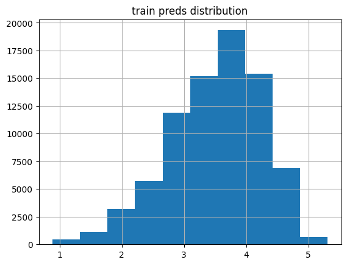
The median and mean for the training predictions are also a tiny bit larger but mostly the distribution is the same as y_range=(0, 5.5) (although the kurtosis is much smaller).
Training with y_range=(0.75, 5.25)
I’m curious if a “tighter” range changes the results.
learn4 = collab_learner(dls, n_factors=50, y_range=(0.75, 5.25))
learn4.fit_one_cycle(5, 5e-3, wd=0.1)| epoch | train_loss | valid_loss | time |
|---|---|---|---|
| 0 | 0.891943 | 0.931708 | 00:12 |
| 1 | 0.676929 | 0.879818 | 00:13 |
| 2 | 0.531733 | 0.866186 | 00:12 |
| 3 | 0.459268 | 0.852890 | 00:13 |
| 4 | 0.454604 | 0.848512 | 00:12 |
This results in the second-best loss value thus far.
plot_preds(learn4.get_preds(dl=dls.valid)[0], 'valid')median: 3.5425978
mean: 3.5018144
kurtosis: -0.113488525
skew: -0.36151984
Statistic: 36.919869251567434
Critical values: [0.576 0.656 0.787 0.918 1.092]
Significance levels: [15. 10. 5. 2.5 1. ]
% of preds outside of 1-5 range: 0.07%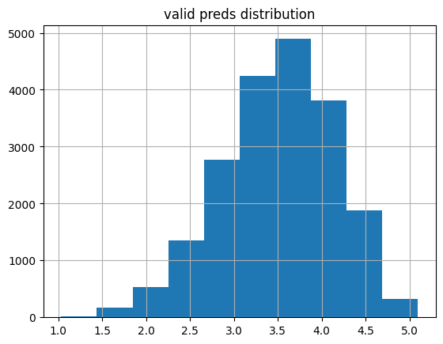
plot_preds(learn4.get_preds(dl=dls.train)[0], 'train')median: 3.5998974
mean: 3.503809
kurtosis: 0.0028086598
skew: -0.5607914
Statistic: 444.8073482159525
Critical values: [0.576 0.656 0.787 0.918 1.092]
Significance levels: [15. 10. 5. 2.5 1. ]
% of preds outside of 1-5 range: 0.05%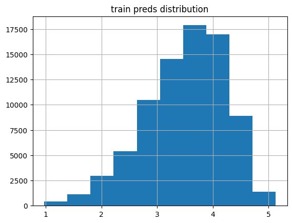
The training and validation predictions have the lowest amount of predictions falling outside the acceptable range—this makes sense because sigmoid is not going to get as close to 1 and 5 as a y_range of (0.5, 5.5) or (0, 5.5).
Training with y_range=(1, 5)
Just to cover my bases, I’ll train with a y_range not recommended: from 1 to 5. With this range, sigmoid will never output ratings of exactly 1 or 5.
learn5 = collab_learner(dls, n_factors=50, y_range=(1, 5))
learn5.fit_one_cycle(5, 5e-3, wd=0.1)| epoch | train_loss | valid_loss | time |
|---|---|---|---|
| 0 | 0.890540 | 0.942143 | 00:13 |
| 1 | 0.675952 | 0.874900 | 00:12 |
| 2 | 0.560956 | 0.855053 | 00:14 |
| 3 | 0.500103 | 0.847492 | 00:17 |
| 4 | 0.492499 | 0.844006 | 00:14 |
Surprisingly, this has supplanted y_range=(0.75, 5.25) with the second-best loss after 5 epochs. I wonder if that is because the overall range is lower?
plot_preds(learn5.get_preds(dl=dls.valid)[0], 'valid')median: 3.5273356
mean: 3.489109
kurtosis: -0.14329968
skew: -0.37828833
Statistic: 42.07929809941925
Critical values: [0.576 0.656 0.787 0.918 1.092]
Significance levels: [15. 10. 5. 2.5 1. ]
% of preds outside of 1-5 range: 0.00%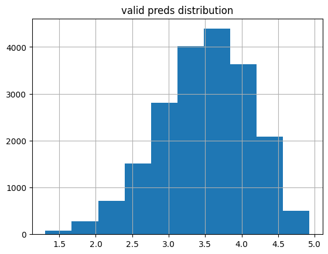
As expected, 0.00% of the ratings fall outside of the minimum of 1 and maximum of 5.
plot_preds(learn5.get_preds(dl=dls.train)[0], 'train')median: 3.5868726
mean: 3.4960902
kurtosis: -0.0628498
skew: -0.55758834
Statistic: 467.5922112545086
Critical values: [0.576 0.656 0.787 0.918 1.092]
Significance levels: [15. 10. 5. 2.5 1. ]
% of preds outside of 1-5 range: 0.00%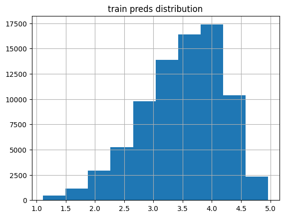
Training with y_range=(-2, 8)
As a last fun experiment, I’ll use a much-wider-than-needed y_range and see how that affects the loss as well as the prediction distributions.
learn6 = collab_learner(dls, n_factors=50, y_range=(-2, 8))
learn6.fit_one_cycle(5, 5e-3, wd=0.1)| epoch | train_loss | valid_loss | time |
|---|---|---|---|
| 0 | 0.806267 | 0.923924 | 00:13 |
| 1 | 0.556011 | 0.928603 | 00:14 |
| 2 | 0.437159 | 0.907485 | 00:13 |
| 3 | 0.346756 | 0.900347 | 00:12 |
| 4 | 0.331412 | 0.895803 | 00:13 |
Interestingly, the training loss is significantly lower than any of the other training runs. The validation loss is about 5% higher than the lowest validation loss achieved prior. I’m curious to see how the distributions compare.
plot_preds(learn6.get_preds(dl=dls.valid)[0], 'valid')median: 3.5484176
mean: 3.5100946
kurtosis: 0.11679816
skew: -0.32186633
Statistic: 21.7676292314718
Critical values: [0.576 0.656 0.787 0.918 1.092]
Significance levels: [15. 10. 5. 2.5 1. ]
% of preds outside of 1-5 range: 1.19%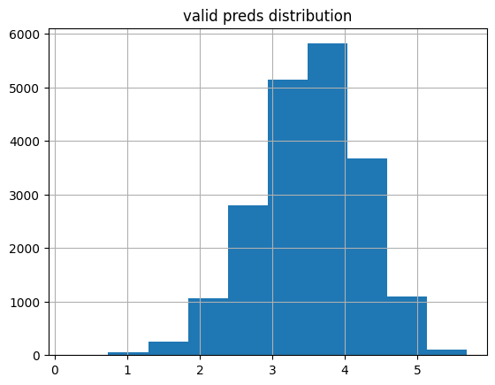
About 6 times as many predictions fall outside of the acceptable range (~1.2% to ~0.2%) which makes sense since the y_range is wider. The overall distributions is similar to the other validation predictions although this distribution (still very not normal) has the lowest Anderson-Darling statistic.
plot_preds(learn6.get_preds(dl=dls.train)[0], 'train')median: 3.632931
mean: 3.5240762
kurtosis: 0.015062247
skew: -0.50895566
Statistic: 350.41688774364593
Critical values: [0.576 0.656 0.787 0.918 1.092]
Significance levels: [15. 10. 5. 2.5 1. ]
% of preds outside of 1-5 range: 1.85%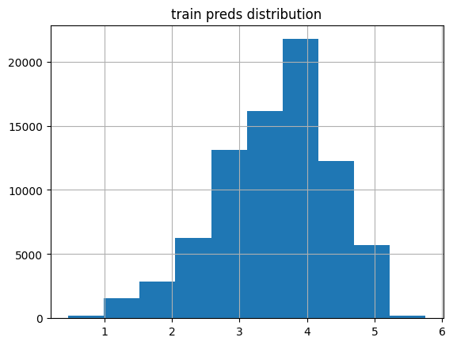
The training loss distribution looks funkier than before (more than 10x the Anderson-Darling statistic), and it has a slightly larger median, and almost 9 times the values falling outside of the acceptable range.
Final Thoughts
I ended up enjoying this experiment more than I expected to. It was helpful to see intuitive results being validated through observing the actual prediction distributions (for example, y_range=(1,5) had 0 prediction outside of that range while y_range=(-2,8) had the most.
There were some surprises along the way: a y_range of (-2,8) had the lowest training loss—not sure what to make of that—a y_range of (1,5) resulted in the second-best loss (perhaps because there is a smaller range to predict within?) and although the none of distributions were normal, there were varying degrees of non-normality.
As part of the fastai Part 1 Lesson 7 homework, I’ll be training models on the full MovieLens dataset (~25M rows) so it’ll be fun to experiment with y_range values and see if I get different results.
I hope you enjoyed this blog post!